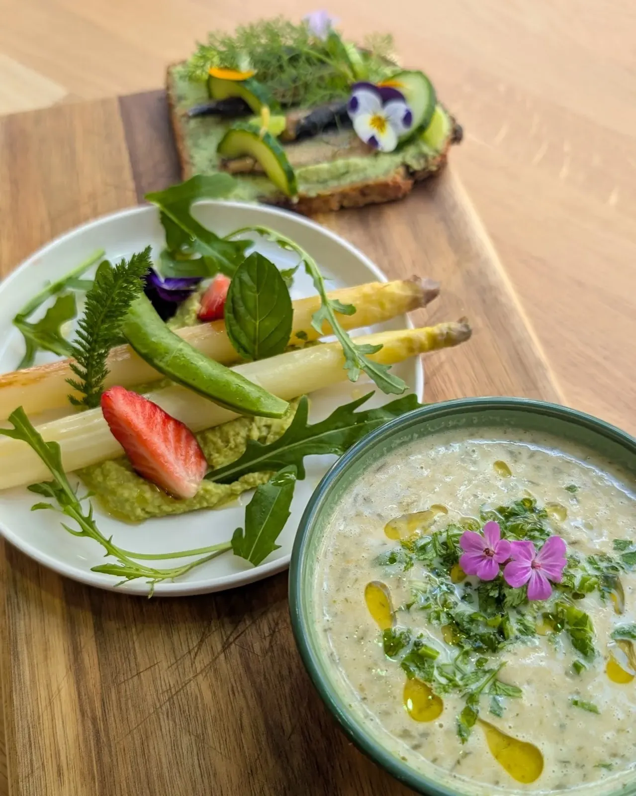
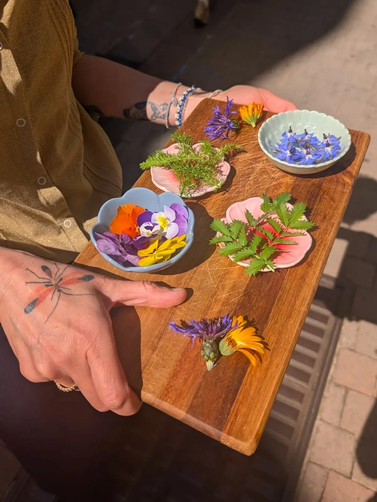
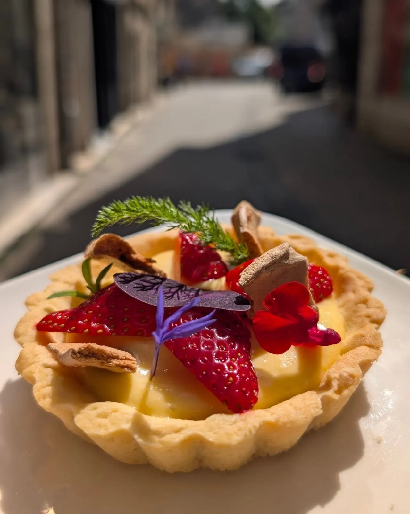
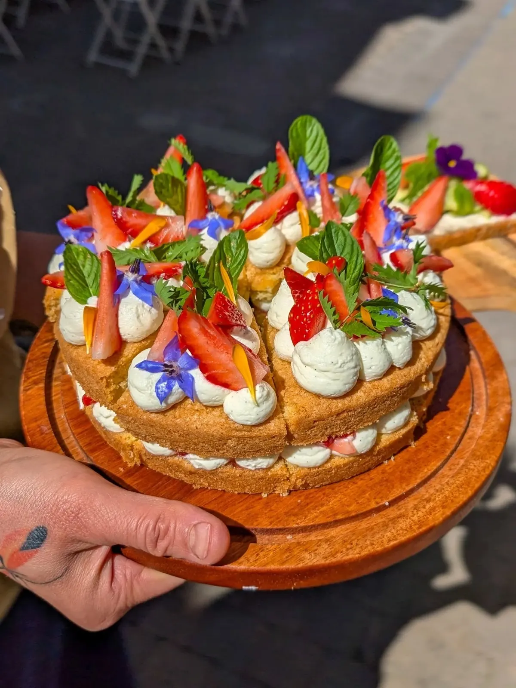
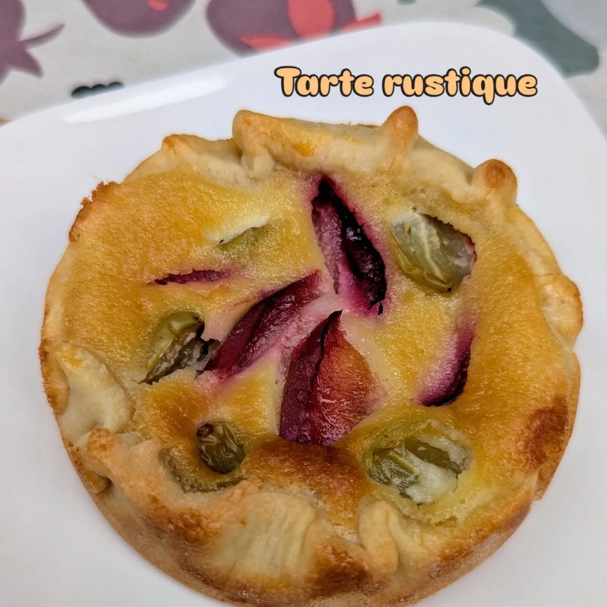

Nouvelle cuisine nordique, tout fait maison.
Cantine du midi et salon de thé, rue de la Regratterie à Poitiers. Des assiettes de saison, faites maison, dans une ambiance chaleureuse.
- Mardi → samedi9 h – 18 h
- 24-26 rue de la Regratterie86000 Poitiers
- Tout fait maisonSimon en cuisine

- Cantine du midi et salon de thé
- Nouvelle cuisine nordique
- Produits de saison, locaux et/ou bio
- Tout est fait maison
- Fermé dimanche et lundi

Simon en cuisine, Céline au jardin.
Chez Køkken, Simon est en cuisine, Céline au jardin et en cueillette. Tout est fait maison, avec des produits de saison, locaux et/ou bio.
Le midiLa cantine, autour du menu de la semaine.
Le salon de théUne pause sucrée, du mardi au samedi.
Salon de thé.
Tartelettes aux fraises, gâteaux à la chantilly, tartes rustiques : des desserts de saison, faits maison et souvent fleuris.



Horaires.
| Lundi | Fermé |
|---|---|
| Mardi | 9 h – 18 h |
| Mercredi | 9 h – 18 h |
| Jeudi | 9 h – 18 h |
| Vendredi | 9 h – 18 h |
| Samedi | 9 h – 18 h |
| Dimanche | Fermé |
Les jours fériés, les horaires peuvent changer : un coup de fil avant de venir.
Venir chez Køkken.
06 95 26 43 25
- Adresse
- 24-26 rue de la Regratterie
86000 Poitiers - Note Google
- 4,9 sur 5, 163 avis
- smorrebrod86@ecomail.fr
- Ouvert
- Du mardi au samedi, 9 h – 18 h